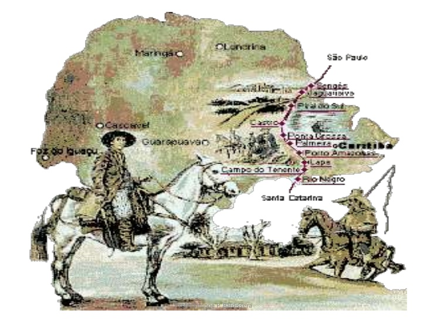

A Rota dos Tropeiros e a Integração do Interior Paranaense.
O tropeirismo foi o movimento sociocultural responsável pelo povoamento e desenvolvimento do interior do Paraná entre os séculos XVIII e XIX. Os tropeiros eram condutores de tropas de gado e mulas que cortavam os Campos Gerais — em cidades como Lapa, Ponta Grossa e Castro —, conectando as feiras do Sul aos centros consumidores do Sudeste e moldando a história da região.

Na Trilha dos Tropeiros: Onde Nasceu o Interior do Paraná
Surgido no século XVIII para atender às demandas de transporte e abastecimento durante o Ciclo do Ouro, o Tropeirismo conectava o Sul ao Sudeste do Brasil através do histórico Caminho das Tropas. Ao percorrerem o território paranaense, as comitivas utilizavam as ricas pastagens naturais dos Campos Gerais como ponto estratégico para engordar e descansar os animais antes de seguirem viagem. Esse fluxo contínuo de tropeiros, comerciantes, indígenas e escravizados transformou os simples pousos de estrada em prósperas vilas que deram origem a importantes cidades do estado, como Rio Negro, Lapa, Castro e Ponta Grossa. Com isso, o movimento deixou um legado duradouro que ajudou a desenhar o mapa do Paraná e a consolidar a gastronomia, a música e os costumes que definem a cultura do interior paranaense até hoje.

A Importância Artística e Cultural do Tropeirismo: A Rota dos Campos Gerais
O Tropeirismo é a base da identidade cultural e artística do Paraná. Nos séculos XVIII e XIX, a passagem dos tropeiros pelos Campos Gerais deu origem a cidades como Castro, Ponta Grossa e Lapa, deixando marcas profundas na arquitetura e nas tradições do estado. Essa herança inspirou o Movimento Paranista e grandes artistas, como Alfredo Andersen e João Turin, além de consolidar pratos típicos como o feijão tropeiro e o barreado. Hoje, essa história segue viva na Rota dos Campos Gerais, em festas tradicionais e em acervos como o Museu do Tropeiro.

Curiosidades
O Ritmo que Criou Cidades
As viagens eram calculadas com base no desgaste dos animais. As tropas percorriam uma média de 45 quilômetros por dia antes de parar para o "pouso". Inicialmente, essas paradas aconteciam ao relento, na beira de rios. Com o tempo, fazendeiros locais começaram a alugar pastos cercados (chamados de invernadas) onde os tropeiros podiam deixar os animais descansando e engordando por semanas antes de seguir viagem, criando os pontos de comércio que viraram as cidades coloniais do Sul e Sudeste.
A Origem Rústica do Feijão Tropeiro
A origem do feijão tropeiro surgiu da necessidade de sobrevivência nas longas viagens dos séculos XVII a XIX. Para a comida não estragar com o calor, os tropeiros misturavam ingredientes secos e duráveis — como feijão cozido sem caldo, farinha, carne-seca e toucinho — em uma única panela de ferro na beira do caminho. A ausência de caldo impedia que o alimento azedasse e resultava em um prato rústico, seco e muito calórico, que garantia a energia necessária para os dias inteiros de caminhada.